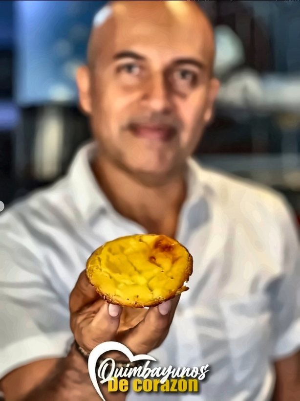

El legado
Catorce años de pasión en cada rebanada
El maestro pastelero Olnardy Maya trajo a Quimbaya el icónico pastel de Belém, nacido en el siglo XIX en el Monasterio de los Jerónimos de Lisboa. Con su receta original, perfeccionada durante 14 años, lo convirtió en una leyenda local.
En el encantador pasaje peatonal Mario Echeverry te espera nuestro pequeño rincón: café recién hecho, panadería exclusiva y una experiencia auténtica que te conecta con el corazón del Quindío.
Olnardy · Pastel de Nata
14Años
4.9Google
171Opiniones